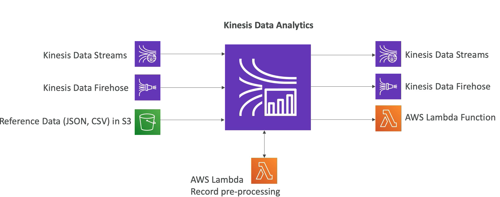
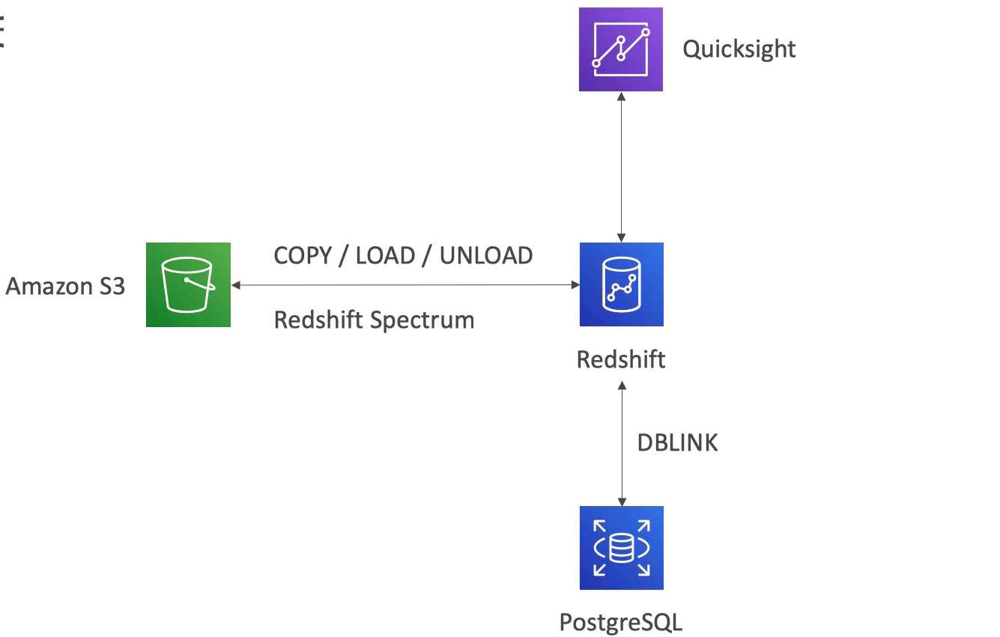
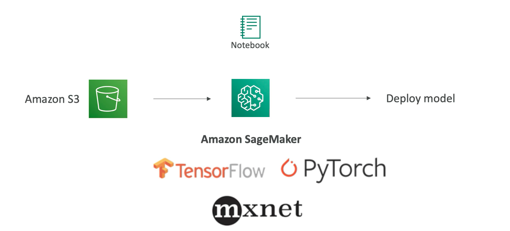

L1 AWS Bigdata Integration
1、IoT

IoT rules actions have amount variety of destinations Kinesis, DynamoDB, SQS, SNS, S3, Lambda and so many others.
2、Kinesis Data Stream

2-1 Producer side
- SDK, Kinesis producer library, Kinesis agents
- Third party libraries
- Apache Spark
- Apache Kafka
2-2 Consumers
- Kinesis consumer library
- SDK
- Firehose
- AWS lambda
- Kinesis connector library
- Apache Spark
3、Kinesis Data Firehose

3-1 Source
- SDK Kinesis producer library)
- Kinesis agent
- Kinesis Data Streams
- Cloudwatch logs and events
- IoT rules actions
3-2 Data transformation
AWS lambda functions do transformation on top of the data.
3-3 Destinations
- Amazon S3
- Redshift
- Elasticsearch
- Splunk
4、Kinesis Data Analytics

4-1 Data sources
- Real time Kinesis data streams
- Kinesis data firehose
- Reference data in JSON or CSV formats directly from S3.
Pre-process the data with AWS lambda so transform the records before doing some analytics.
4-1 Result of the continuous running analytic queries Exp. SQL into
- Kinesis data streams
- Kinesis data firehose
- AWS lambda function
- Exp. notification
5、SQS

5-1 sources
- AWS SDK deploy onto a server or EC2, ECS
- Rules engine on IoT core
- S3 event, like new files to S3
5-2 Destinations
- Application on the server such as EC2 or you can use AWS
- Lambda functions to directly process events from SQS.
6、S3

6-1 Go to places for data
- Snowball, snowball edge to transport data from your on premise environment
- Firehose deliver data into S3
- Redshift offload it data into S3
- Athena: queries from and writes data to S3
- Data pipeline: Move data into S3
- IoT core is a direct rule that integrates with S3
- Database migration service: Source data from postgres and write it down to S3
- EMR will use S3 as its own backend if we use EMRFS
- Glue use S3 as a target
6-2 S3 integrate with
- to lambda function
- to an SQS queue
- to an SNS topic
7、DynamoDB

- Client SDK to write data
- Database migration service(DMS) transfer data from MySQL into DynamoDB
- AWS data pipeline want to a batch running ETL
- DynamoDB streams: Chain of streams from DynamoDB
- integrated directly with AWS Lambda functions.
- Kinesis client library with the DynamoDB adaptor
- Glue:
- Get all the tables metadata information directly into its data catalog
- EMR can read from DynamoDB using hive
- Hive can basically scan entire DynamoDB table before doing a query.
8、Glue
A metadata service collection as ETL

8-1 Sources
- DynamoDB
- Amazon S3
- JDBC based.
- RDS databases on premise database
- Database in the cloud
Glue crawlers to crawl these data sources retrieve the schema retrieve the table names all that stuff
Glue data catalog can be used by different technologies to basically query data.
- Redshift spectrum to query data directly on S3
- Athena as well to create it on S3
- EMR plus hive know where it can store source data
9、EMR
EMR is a lot of things, it's Hadoop, spark, hive, pig, presto, Apache HBase, Jupiter, Zeppelin, Flink.

- Glue data catalog to know what to query
- Amazon S3 using EMRFS and maybe using the consistent view on S3.
- DynamoDB where hive can scan an entire DynamoDB table for its query.
- Apache ranger on EC2 for advanced model for controlling user access into our EMR cluster
10、Amazon Machine Learning (ML) (Deprecated)

10-1 Sources data
- Amazon S3
- redshift
Exposes the output model as a prediction and explicit prediction API so we can basically throw some data at Amazon ML
11、Amazon SageMaker
Newer shiny Amazon machine learning service

- Source only from S3
- Tensorflow, pytorch, and mxnet or many other data machine learning framework for perform our data analysis or machine learning modelling.
12、AWS Data Pipeline
Moving data

- Amazon S3
- JDBC for example RDS,
- EMR (hive)
- DynamoDB,
- basically or anything you want and can program
13、ElasticSearch Service

- Kinesis data firehose
- IoT core has a rule to send data
- CloudWatch logs
Kibana
- IAM access integration
- Cognito integration
14、Anthena

- Query data only in S3
- Get a metadata information from the glue data catalogue
- QuickSight can use Athena as a database engine
15、Redshift
- Copy load or unload data from and to through S3
- Redshift spectrum to basically query the data in S3(Dont touch data from S3)
- QuickSight query data warehouse in redshift
- Integration with PostgreSQL to replicate some data called DBlink
16、QuickSight

- RDS or JDBC to connect to any database
- Redshift
- Amazon S3
- Salesforce, Teradata, Excel flat files, or JSON or CSV, Jira